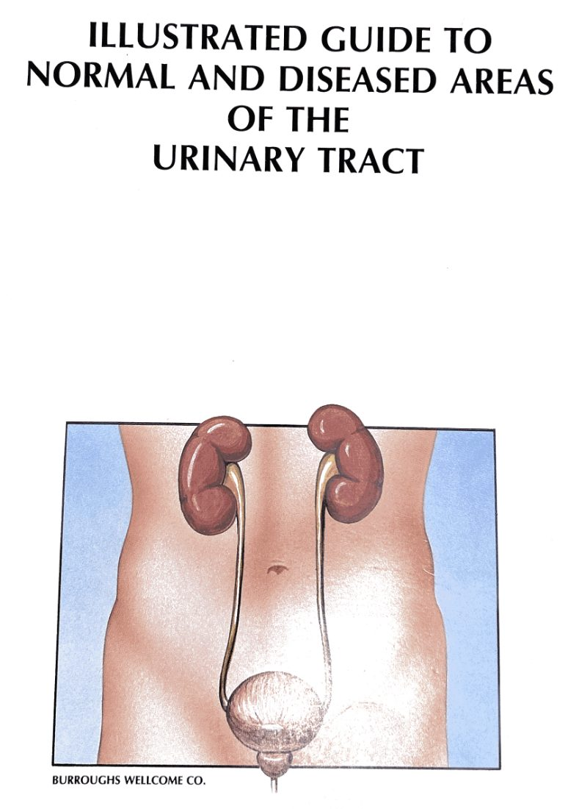
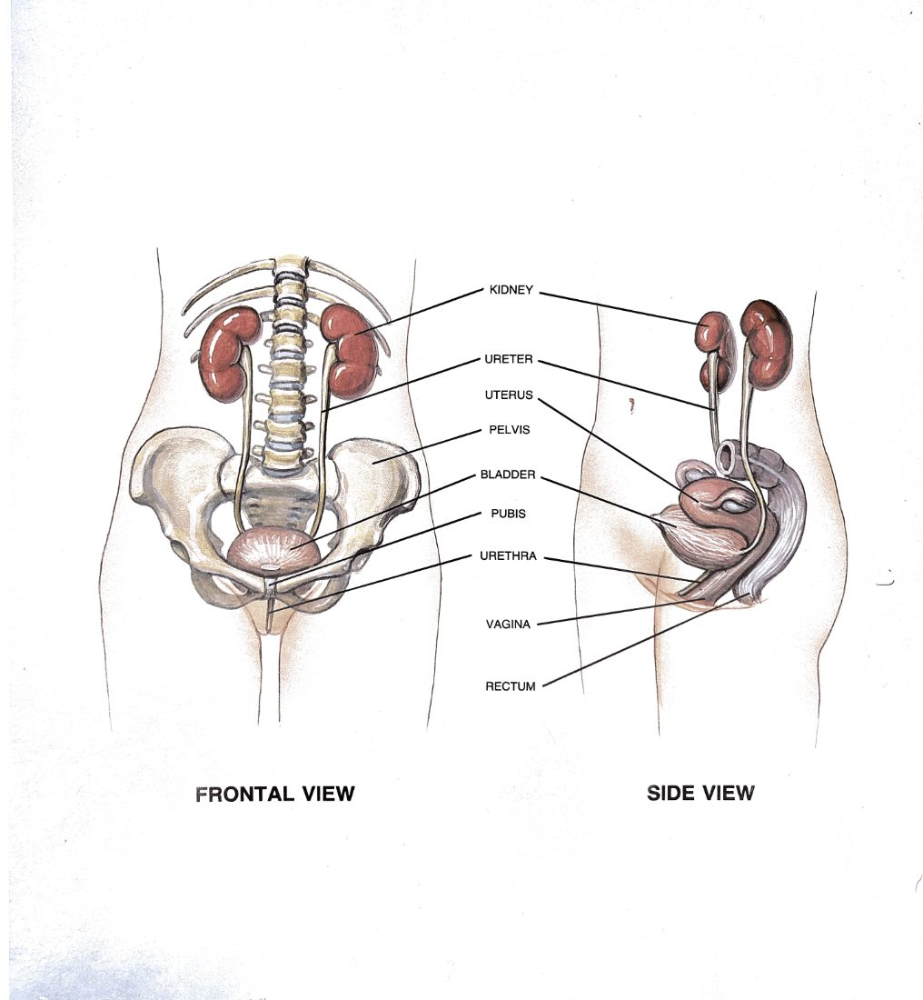
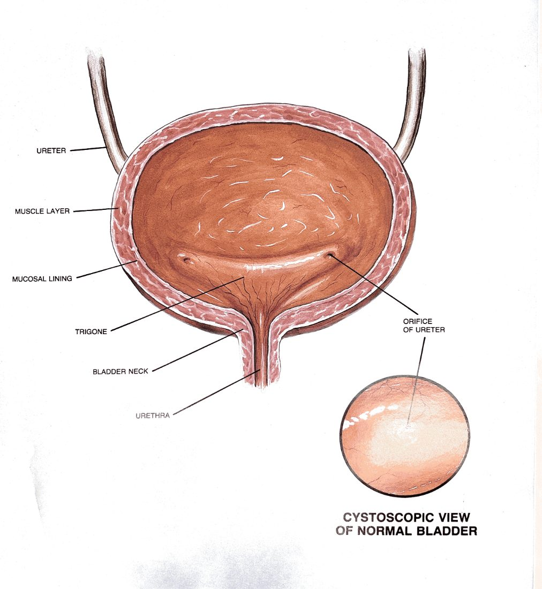
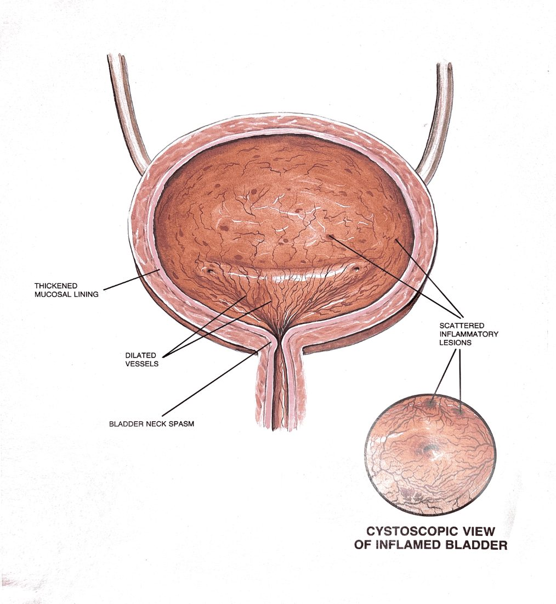
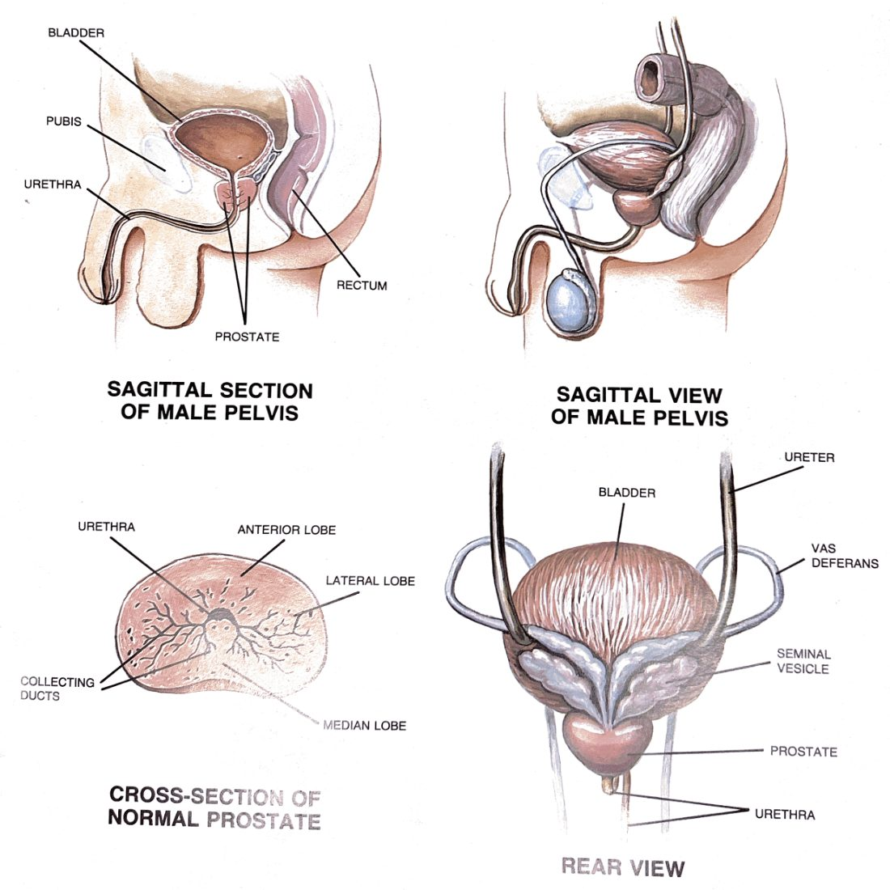
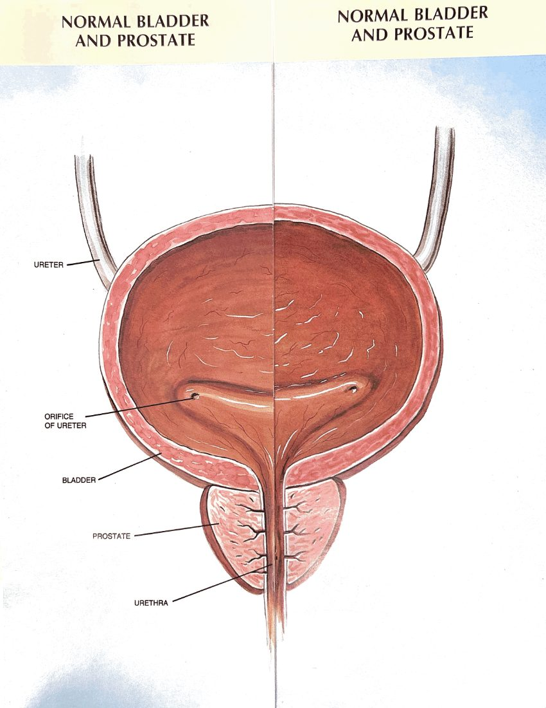
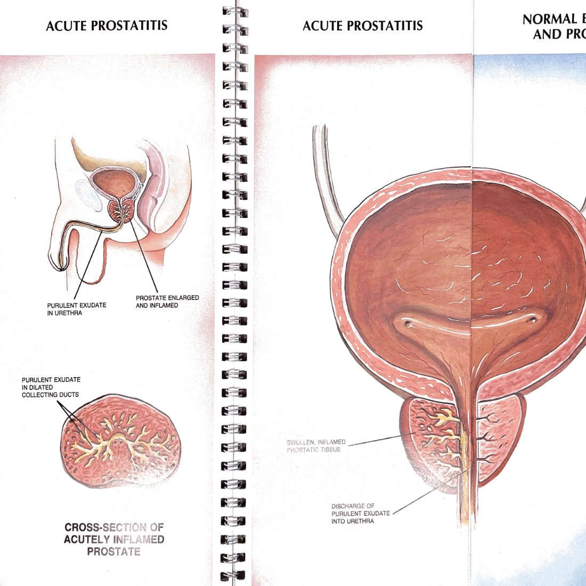
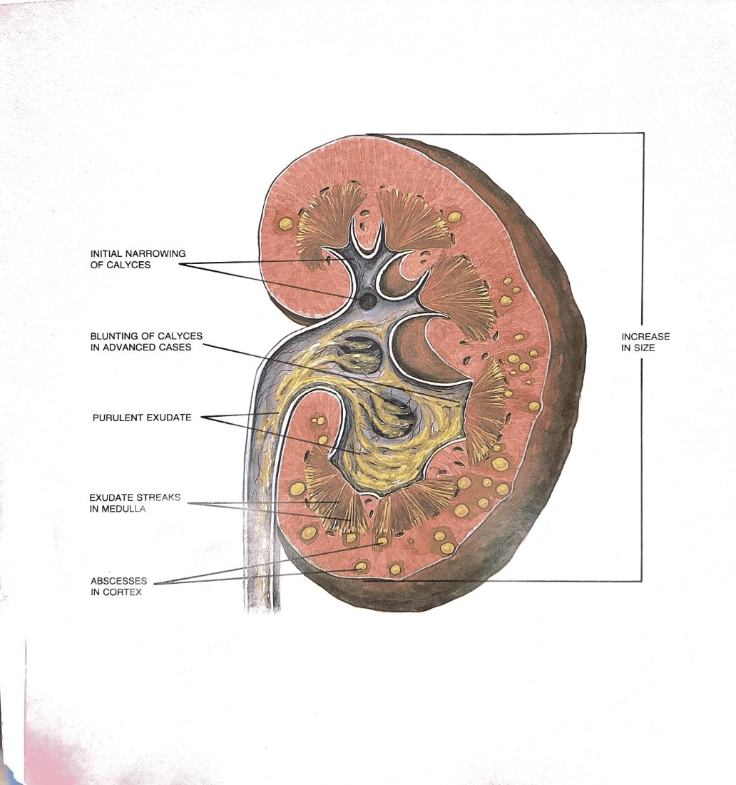
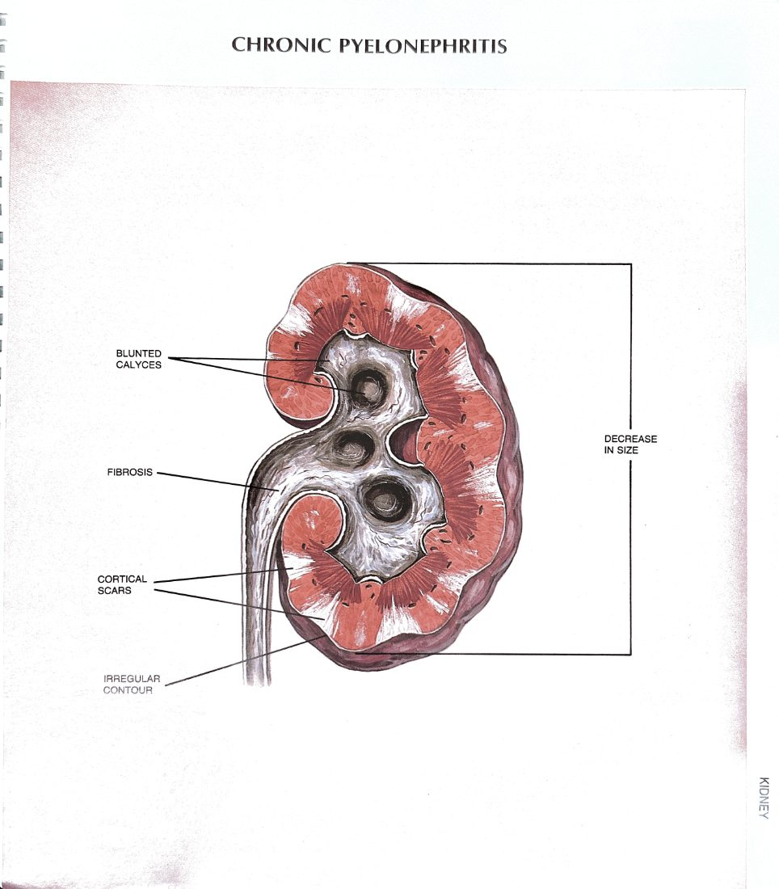

← Clinical Geometry · Atlas Viewer · May 24, 2026
Atlas of the Urinary Tract — All 16 Plates
Every figure from the original Burroughs Wellcome atlas, with what each plate shows and where it appears in the reference. Use this page as a visual index when you want to find a specific anatomy or pathology illustration.
Source
Burroughs Wellcome Co., Atlas of the Urinary Tract — spiral-bound illustrated guide, scanned (16 plates, two parts). Original PDFs: Part 1 · Part 2. Full-resolution PNGs of every plate are in images/; the JPG copies below are the web-display versions used throughout the reference.
Part 1 — Anatomy & Inflammation
8 plates
Part 1 · Plate 1
Cover
Title page of the atlas. Establishes the source and the visual style used throughout — bright watercolor-style illustrations with line-pointer labels.
— reference only —

Part 1 · Plate 2
Male Urinary Tract — Overview
The conduit in situ: kidneys, ureters, bladder, prostate-encircled urethra. Sagittal and frontal views with labeled structures. The orientation plate.
Used in: The Urinary Tract · principle section

Part 1 · Plate 3
Female Urinary Tract — Overview
The female counterpart — short urethra, no prostate, different pelvic anatomy. Worth keeping side-by-side with plate 2 for the asymmetry of UTI epidemiology between sexes.
— available for future female-focused docs —

Part 1 · Plate 4
Normal Bladder — Cross-Section + Cystoscopic View
Anatomy of station 3: trigone, ureteral orifices, smooth mucosa. Includes the cystoscopic "what the scope sees" view that maps the cross-section to the endoscopic appearance.
— available for cystoscopy / bladder docs —

Part 1 · Plate 5
Inflamed Bladder (Cystitis)
Thickened mucosa, dilated vessels, bladder neck spasm, scattered inflammatory lesions. Cross-section and cystoscopic view of acute cystitis.
— available for UTI / cystitis docs —

Part 1 · Plate 6
Male Pelvis — Sagittal & Prostate Cross-Section
Four-panel composite: sagittal section of the pelvis showing prostate relationship to bladder and rectum, sagittal view, normal prostate cross-section with anterior/lateral/median lobes labeled, posterior bladder/prostate view with vas, seminal vesicles, ureters.
— available for prostate-anatomy docs —

Part 1 · Plate 7
Normal Bladder & Prostate
Coronal section showing the relationship of trigone, ureteral orifices, prostatic urethra, and external prostatic anatomy. The baseline for comparison against pathology plates.
— reference; pairs with plates 8, 2-1, 2-2 —

Part 1 · Plate 8
Acute Prostatitis
Sagittal section showing enlarged inflamed prostate with purulent exudate in the urethra. Cross-section showing purulent material in dilated collecting ducts.
— available for prostatitis docs —
Part 2 — Obstruction & Pathology
8 plates
Part 2 · Plate 1
Benign Prostatic Hyperplasia (Nodular Hyperplasia)
Hyperplastic adenoma compressing the prostatic urethra and bulging into the distended bladder. Cross-section shows compressed urethra, calcifications, displaced normal prostatic tissue. The mechanism of station-5 obstruction visualized.
Used in: The Urinary Tract · worked case · Operations · TURP section

Part 2 · Plate 2
Prostate Carcinoma — Early & Advanced
Side-by-side: early peripheral-zone carcinoma confined to the gland, vs. advanced carcinoma invading the bladder and surrounding normal prostatic tissue. The visual case for why staging matters and what radical prostatectomy attempts to remove.
Used in: Operations · robotic prostatectomy section

Part 2 · Plate 3
Upper Tract Obstruction — Synoptic
One of the two showstopper plates. Hydronephrosis, hydroureter, calculus at multiple levels, ureteral tumor, ureteral kink, aberrant vessel compressing the UPJ, scar tissue, chronic infection. Every way stations 1–2 can fail, in one drawing.
Used in: The Urinary Tract · pathophysiology section

Part 2 · Plate 4
Bladder Pathologies — Overview
Diverticulum, thickened wall, tumor, calculus, ureterocele, foreign object, congenital valve, polyp, stenosis. The catalog of things that can sit on or in the bladder. Useful when interpreting cystoscopy findings.
Used in: Follow-Up · bladder cancer surveillance section

Part 2 · Plate 5
Lower Tract Obstruction — Synoptic
The companion showstopper. Thickened bladder wall, muscular hypertrophy, calculus, tumor, BPH, prostatic abscess, advanced prostate carcinoma, congenital valve, polyp, infection, urethral stenosis, phimosis. Every way stations 3–5 can obstruct, in one drawing.
Used in: The Urinary Tract · pathophysiology · Follow-Up · recurrent UTI in men

Part 2 · Plate 6
Normal Kidney — Cross-Section
Cortex, medulla, calyces, pelvis, ureter, capsule. Station 1's internal architecture — the structure that obstruction at station 2 backs up into and that partial nephrectomy attempts to preserve.
Used in: The Urinary Tract · kidney sub-pipeline · Operations · partial nephrectomy section

Part 2 · Plate 7
Acute Pyelonephritis
Enlarged inflamed kidney with purulent exudate streaking through the medulla and cortical abscesses scattered through the parenchyma. Why a closed obstructed infected system is a surgical emergency.
Used in: Consults · urosepsis section

Part 2 · Plate 8
Chronic Pyelonephritis
Shrunken kidney with blunted calyces, fibrosis, cortical scars, irregular contour. The end-stage appearance of recurrent infection and unrecognized obstruction.
— available for CKD / chronic infection docs —